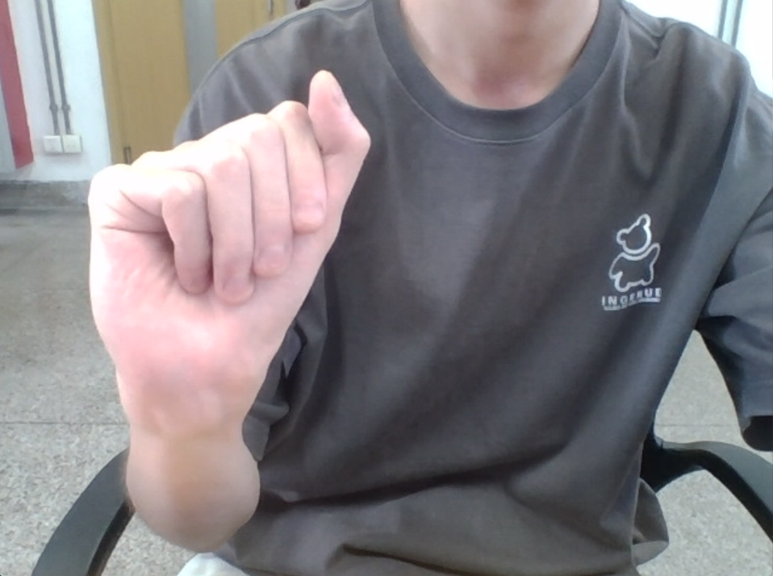
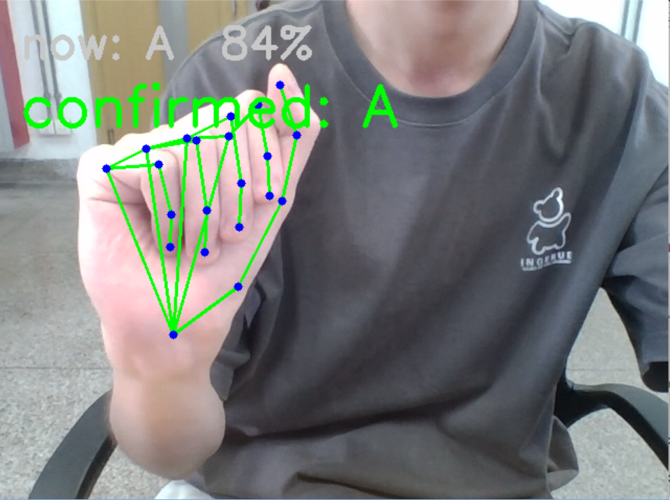
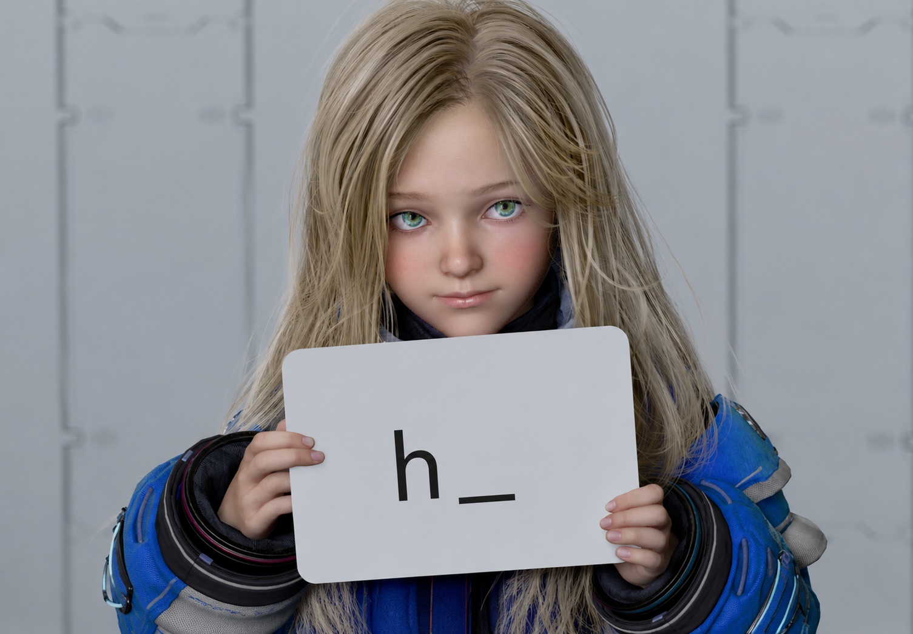
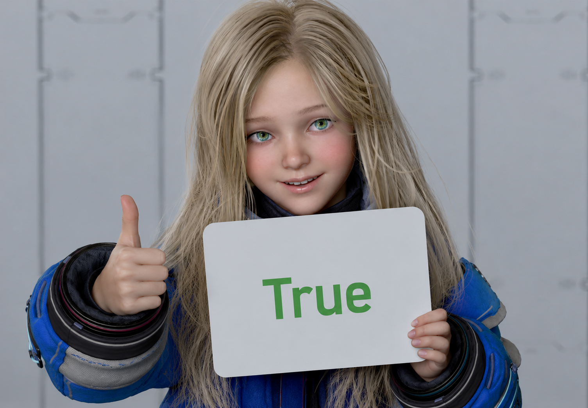
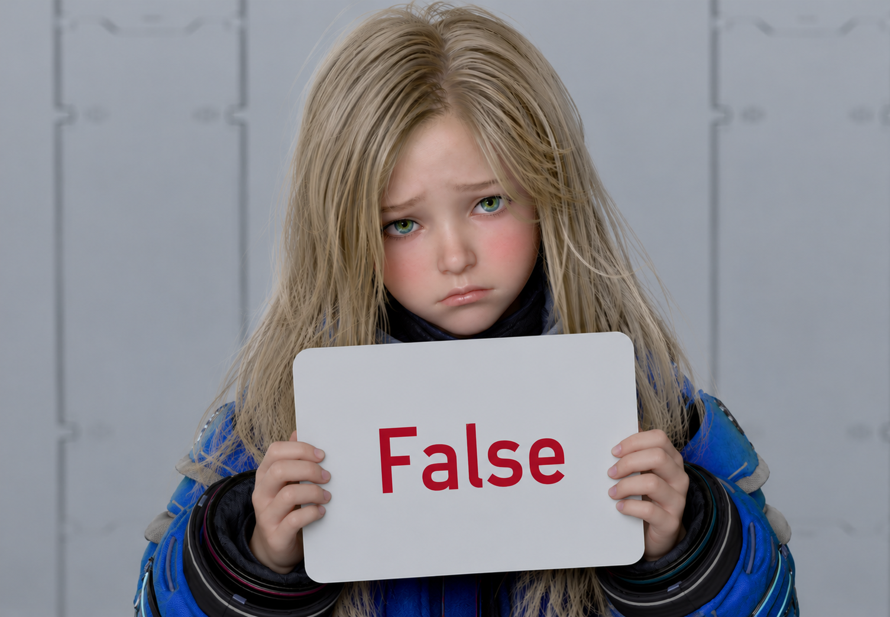

基于计算机视觉的美式手语字母实时识别与互动学习游戏
Computer Vision · MediaPipe · Real-time Recognition





mascot.set_state(...)| 相机 | LanXin Eagle Pro — 高帧率、低畸变、强弱光 |
| 视觉 | MediaPipe Tasks API（0.10.35+） |
| 模型 | RandomForest — 速度快，无需 GPU |
| 界面 | Pygame — 跨平台，帧级渲染控制 |
mp.solutions APIAttributeError，无法运行。需自行下载 hand_landmarker.task 模型文件，完全重构 HandLandmarker 初始化逻辑，迁移至 Tasks API。_last_confirmed 字段 + deque 缓冲，仅在字母切换时触发；收回手再伸出可重复输入